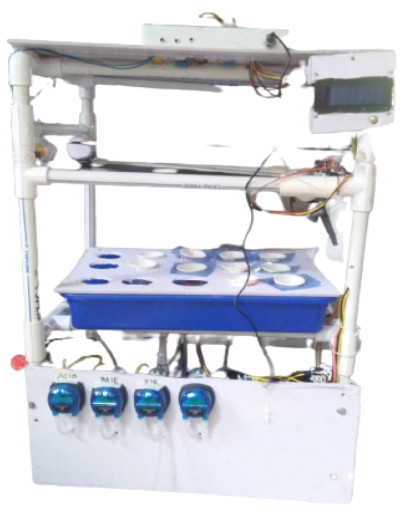
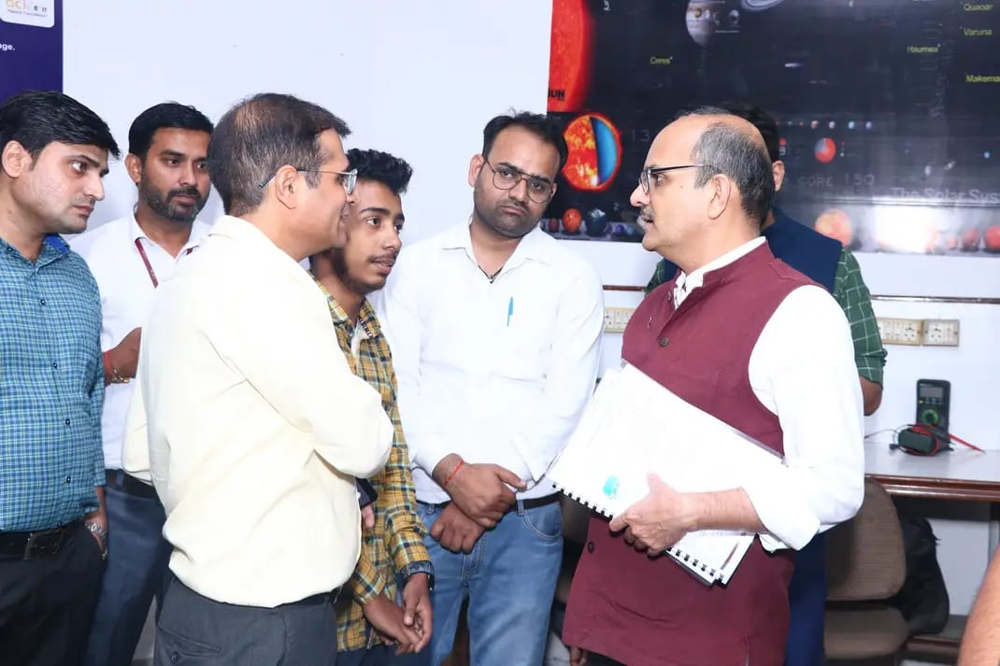
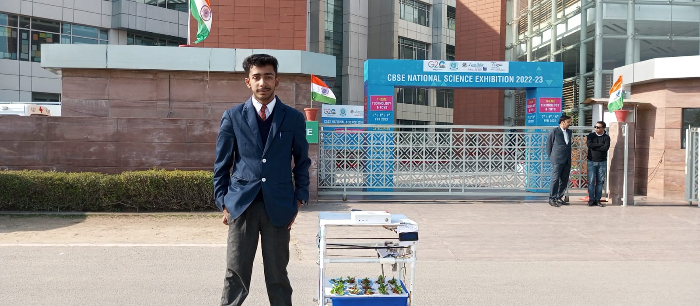

Robotics Assisted Farming
Every big journey starts with a simple observation. For me, it was noticing the growing disconnect between traditional agriculture and modern technology. I wondered: what if we could merge artificial intelligence with soil-less farming to create a self-sustaining ecosystem? That thought became the seed for the Robotics Assisted Farming Model. My goal was to enable the usage of aeroponics as well as hydroponics with the assistance of automation and AI. To bring this vision to life, I began wiring together ATMEGA2560, Broadcom BCM2711, and ESP8266 microcontrollers with a vast network of sensors.

The Physical Model prototype.Building the Core (Key Features)
Working on the initial prototype, I wanted it to be as comprehensive and autonomous as possible. I focused heavily on integrating these core features into the build:
- Dual Systems: I engineered it to run hydroponics using centrifugal pumps and a reliable water drainage system, alongside an aeroponic system equipped with a water mist creating mechanism.
- Auto Seeding: To remove manual labor, I built an X and Y-axis moving mechanism using BO motors, achieving a seeding accuracy of over 85%.
- Plant Disease Detection: To give the system "eyes," I implemented a Convolutional Neural Network and NDVI in Python, utilizing OpenCV and TensorFlow to actively identify plant diseases.
- Auto Nutritional Maintenance: I integrated pH, TDS, humidity, and temperature sensors to constantly monitor and provide nutrition at an equilibrium state using peristaltic pumps.
- Mobile Based UI: Finally, I coded a user-friendly mobile application to provide real-time information, live farm footage, and suggestive measures right to the user's phone.
The Turning Point: Incubation at ACIC MIET
As the prototype took shape, its potential became undeniable. I designed the system to be highly versatile—targeted for use in Agricultural Farms, Farming Research Labs, and even at home. To maintain optimal growing conditions, I included an Inbuilt Lighting System and an Auto Cooling System, while utilizing a dedicated Database to securely store all operational data. This comprehensive approach caught the attention of the ACIC MIET (Atal Community Innovation Centre - Meerut Institute of Engineering and Technology). Being accepted for incubation there was a massive milestone. It provided me with the mentorship, workspace, and resources needed to take the project from a raw prototype to a professional model.

Developing and refining the project during the incubation phase at ACIC MIET.Refining the Tech Specs & Connectivity
During my time at the incubation center, the hardware was heavily optimized to ensure robust performance and stability:
- Microcontrollers: Atmega 2560, Esp8266 (SOC), BSM2711.
- Sensors: DS18B20, DHT11, LIQUID PH SENSOR, TDS SENSOR.
- Dimensions: Height 28.5 inch, Width 15 inch, Length 20 inch.
- Network & Hardware: The model was upgraded to be fully supported via WIFI 802.11N IEEE, effortlessly operating a built-in camera, peristaltic pumps, BO motors, centrifugal pumps, and servo motors.
Taking Control
To make testing and manual overrides easy during live demonstrations, I built a manual control board consisting of six primary buttons for quick system overrides and mode switching:
- Button 1: Reset
- Button 2: Aeroponics Mode
- Button 3: Hydroponics Mode
- Button 4: Sowing Mode
- Button 5: Plant 1 (Low Nutri)
- Button 6: Plant 2 (High Nutri)
For more detailed technical data, pinouts, and hardware configurations from this phase, please refer to the Robotics-Assisted-Farming-datasheet.pdf.
The Grand Stage
All the hard work, late nights, and iterations at ACIC MIET finally culminated into one major event. I proudly packed up the finalized Robotics Assisted Farming Model and took it to the National Science Exhibition 2023, presenting this automated future of agriculture to experts, judges, and fellow innovators on a national stage.

At the National Science Exhibition 2023 with the Model.